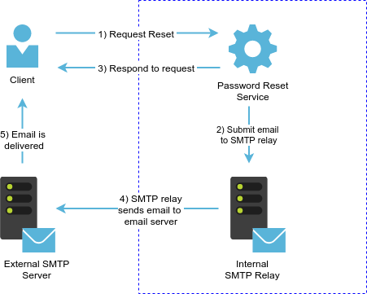
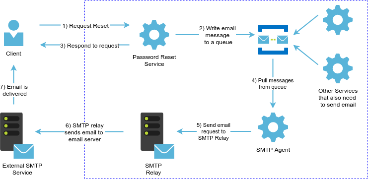
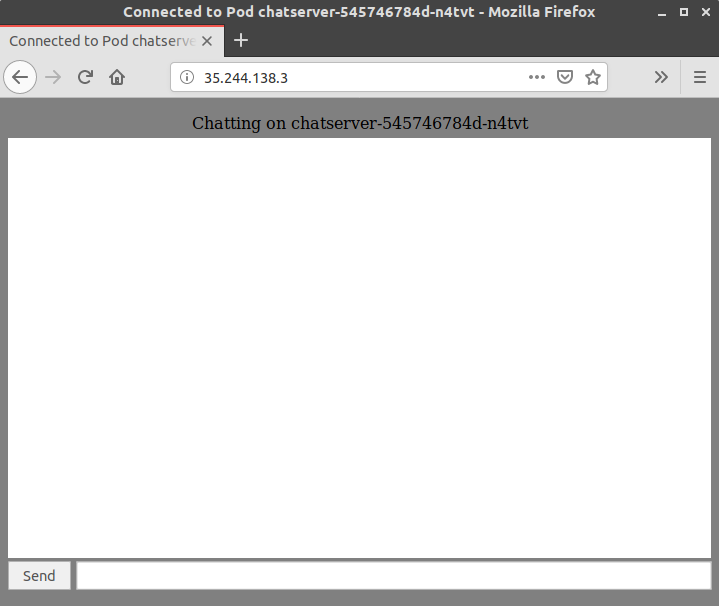

In this lab we are going to learn to use Apache Kafka to implement some common Event-Driven batch processing patterns. We are going to first learn to interact with kafka with go. We will then go through several stages to deploy a Websockets based Chat application that will suffer from scalability problems. We will then use kafka to make the application horizotally scalable by means of applying the publisher/subscriber architectural pattern.
The detailed goals of this lab are:
Imagine you have a service that requires a long running process to be executed for every request that it receives. The consumers of your service do not expect it to provide an immediate response, and instead they expect it to eventually complete the work. Some cases where this scenario applies:
Examples like the above, when you need to defer the execution of business logic, are even more common when you implement distributed architectures where multiple “small” individual services with reduced responsibilities are used to compose a larger service. Since networks are unreliable, instead of using synchronous code execution done through remote procedure calls (e.g. Rest API), in many cases it is preferable to have these individual “small” components queue up notifications to other components in order to trigger other logic/work by other components. Using an event driven workflow is a common pattern used to decompose larger components into two or more smaller components.
As an example, imagine a process to reset forgotten passwords. A very common pattern relies on sending an email with a link to the verified email address of the user that is requesting his/her password to be reset. You could implement the process in a single component (identified in the following diagram as Password Reset Service) that takes the request from the user, then validates the submitted information and then contacts an SMTP server (https://en.wikipedia.org/wiki/Simple_Mail_Transfer_Protocol) to relay the message to the destination mailbox, and after this sends a response to the client:

This approach has the following limitations:
Consider instead an approach that is presented in the following illustration:

There is now a component (SMTP Agent) whose only responsibility is to manage all aspects of sending emails. In order for your internal applications/services to send emails, they need now to communicate in some way with the SMTP Agent. We could have the SMTP Agent implement a REST API that other services could use to invoke the action of sending an email; however, if you look closely, this would not remedy any of the problems that we pointed out before, and, on the contrary, it will actually make them worse since now there is an addional data exchange that needs to happen internally when a user requests to reset his password.
To solve this problem, we put a buffer of work to be done in front of SMTP Agent. Email messages that need to be sent are written to a queue, and the SMTP Agent will fetch them only when it is not busy, and remove them only once it has been able to confirm that the email request has been submitted by the SMTP Relay. By using this approach, we make the interaction with the SMTP Relay asynchronous. Assuming that the writes to that message queue are fast, our Password Reset service will be fast, since it does not have to wait for any interaction with the SMTP Relay. If the SMTP relay is down, the Password Reset Service will not be affected. Last, any application that wants to send emails could do so by simply knowing to which message queue to write.
In the previous example we have increased the overall complexity of our system because we have added two additional elements (the message queue and the SMTP Agent), but we have gained in terms of proving a service that is faster to respond and will be more reliable (assuming, of course, that the service that provides the queueing mechanism is fast and more reliable that an SMTP Relay). We also gain in making our system easier to configure and easier to mantain, since now we need to mantain SMTP relay configuration only on one component, and we only have to implement logic to interact with SMTP in one place, instead of potentially many of internal services.
Apache Kafka is an open-source stream processing platform. The official documentation provides an excellent introduction to Apache Kafka. Instead of reproducing that information here, go to https://kafka.apache.org/intro. Make sure that you read that document, and that you have a good understanding of the following concepts:
For this lab you don’t need to understand what Partitions and Replicas in a Kafka context. Those are very important features that set Kafka apart from other messaging tools. However, in order to keep things simple in this lab, we are going to use a standalone Kafka broker running in a Docker container.
Provision a VM and a kubernetes cluster following the same procedure that you have used on previous labs.(Part 1 of Lab No. 3.). Name the VM lab08.
Log into lab08.
Create a Dockerfile to run Kafka using the following content (which is an optimized version of the Dockerfile that was assigned in Lab2):
FROM openjdk:8-jre-alpine ENV KAFKA_VERSION=1.0.0 \ KAFKA_SCALA_VERSION=2.11 \ KAFKA_HOME=/opt/kafka ENV KAFKA_ARCH="kafka_$KAFKA_SCALA_VERSION-$KAFKA_VERSION.tgz" WORKDIR /opt RUN apk add --no-cache bash jq openssl ca-certificates \ && wget -O - http://archive.apache.org/dist/kafka/$KAFKA_VERSION/$KAFKA_ARCH | tar zxf - \ && mv /opt/kafka_$KAFKA_SCALA_VERSION-$KAFKA_VERSION $KAFKA_HOME \ && sed -i 's/zookeeper.connect=localhost:2181/zookeeper.connect=zookeeper:2181/g' /opt/kafka/config/server.properties \ && sed -i 's/broker.id=0/broker.id=-1/g' /opt/kafka/config/server.properties \ && echo -e '\nadvertised.listeners=PLAINTEXT://kafka:9092' >> /opt/kafka/config/server.properties CMD ["/opt/kafka/bin/kafka-server-start.sh", "/opt/kafka/config/server.properties"]
Build that Dockerfile and tag the image as gcr.io/<YOUR_PROJECT_ID>/kafka:latest. Push the image to your Google Cloud Container Registry.
> docker build -t gcr.io/$(gcloud config get-value project)/kafka:latest . > gcloud docker -- push gcr.io/$(gcloud config get-value project)/kafka:latest
Save the following snippet as zookeeper.yaml. Use this file to create a zookeeper service (using the kubectl create -f zookeeper.yaml command).
apiVersion: v1 kind: Service metadata: name: zookeeper spec: ports: - port: 2181 name: client - port: 2888 name: server - port: 3888 name: leader-election selector: app: zookeeper clusterIP: None --- apiVersion: apps/v1 kind: Deployment metadata: name: zookeeper spec: selector: matchLabels: app: zookeeper strategy: type: Recreate template: metadata: labels: app: zookeeper spec: containers: - image: zookeeper:3.4.11 name: zookeeper env: ports: - containerPort: 2181 name: client - containerPort: 2888 name: server - containerPort: 3888 name: leader-election
Deploy a kafka service to your kubernetes cluster using the following yaml file (replace <YOUR_PROJECT_ID> with your google cloud project id).
apiVersion: v1 kind: Service metadata: name: kafka spec: ports: - port: 9092 name: client selector: app: kafka clusterIP: None --- apiVersion: apps/v1 kind: Deployment metadata: name: kafka spec: selector: matchLabels: app: kafka strategy: type: Recreate template: metadata: labels: app: kafka spec: containers: - image: gcr.io/<YOUR_PROJECT_ID>/kafka:latest name: kafka env: ports: - containerPort: 9092 name: client
Test that kafka is working by creating a topic and creating and consuming messages. These are the steps 9 to 12 that were provided in Part 2 of Lab No.2 (with the difference that you are now running Kafka in kubernetes, so you need to use kubectl exec command to enter the containers instead of docker exec).
In Part 4 of Lab No. 2 we used a very simple python application to enable writing messages to a Kafka Topic. In this part of the lab we are going to implement the same logic using the sarama go library (https://github.com/Shopify/sarama).
We are going to use a SyncProducer to write to kafka. The official documentation can be found at https://godoc.org/github.com/Shopify/sarama#example-SyncProducer.
Create a directory called kafkawrite.
Inside this directory create a file called main.go with the following content:
When this file is executed, it reads input from a terminal and writes it to a Kafka topic. The interesting bits (as far as it concerns to Kafka/Sarama) are:
- line 27: create an instance of
SyncProducer- line 44: create a
ProducerMessage. This object is a collection of elements passed to the Producer in order to send a message, in this case we only care about the topic and the value (the message itself)- line 46: the
SendMessageexecutes the write request.
To test this file, execute the following commands in lab08:
First install go:
> sudo apt-get install golang-go
Get sarama:
> go get github.com/shopify/sarama
Sarama needs to be able to resolve the names of the kafka brokers. Since we want to test this locally (vs in a kubernetes environment) and we have kafka running in a Kubernetes pod, we need to add the IP Address of the kafka pod to lab08 /etc/hosts file. The following set of commands first make a backup of your /etc/hosts file, and then it appends and entry to this file with the IP Address and name of the Kafka container. Run the following command very carefully, if you enter an incorrect value you might wipe out your /etc/hosts file.
> cp /etc/hosts etchosts.back > KAFKA_IP=$(kubectl get pods --selector=app=kafka -o jsonpath='{.items[*].status.podIP}') sudo -E bash -c 'echo -e "\n$KAFKA_IP kafka" >> /etc/hosts'After running the previous command you should see a line added at the end of your
/etc/hosts:> cat /etc/hosts 127.0.0.1 localhost # The following lines are desirable for IPv6 capable hosts ::1 ip6-localhost ip6-loopback fe00::0 ip6-localnet ff00::0 ip6-mcastprefix ff02::1 ip6-allnodes ff02::2 ip6-allrouters ff02::3 ip6-allhosts 169.254.169.254 metadata.google.internal metadata 10.40.0.7 kafkaYou can also confirm by pinging the container by its name:
> ping -c 3 kafka PING kafka (10.40.0.7) 56(84) bytes of data. 64 bytes from kafka (10.40.0.7): icmp_seq=1 ttl=63 time=26.1 ms 64 bytes from kafka (10.40.0.7): icmp_seq=2 ttl=63 time=24.4 ms 64 bytes from kafka (10.40.0.7): icmp_seq=3 ttl=63 time=24.8 ms --- kafka ping statistics --- 3 packets transmitted, 3 received, 0% packet loss, time 2003ms rtt min/avg/max/mdev = 24.465/25.129/26.101/0.714 ms
Execute using go run. Notice how we set the TOPIC and the KAFKA_BROKER variables:
> TOPIC=testtopic KAFKA_BROKER=kafka:9092 go run kafkawrite/main.go Enter lines of text to be written to "testtopic":
Enter several lines of text. Each line will be written to Kafka as a message to the topic testtopic. In the next part of the lab we are going to read those messages. If you enter one blank line the utility will exit, however, do not exit this utility at this time since we are going to use it in the next part of the lab (if you exited, you can simple re-run it).
We are going to use a Consumer class to read from kafka. The official documentation can be found at https://godoc.org/github.com/Shopify/sarama#example-Consumer.
Start by opening a new SSH session to lab08. Create a directory called kafkaread.
Inside this directory create a file called main.go with the following content:
When this file is executed, it reads messages from the specified topic and prints them to stdout. The Kafka/Sarama logic that you should understand is in the following lines:
- line 26: create an instance of
Consumer- line 35: specify that we want to consume messages from the partition labeled ‘0’ (the default), and we want to consume only new messages. If you specify
sarama.OffsetOldersthe program will consume all the messages in the topic/partition. For this example we are not using partitions, we are using the default which is only one.- line 42: partitionConsumer.Messages() returns a channel with the messages returned by Kafka. (In case you don’t understand what Go channels are, you can play with them here: https://tour.golang.org/concurrency/2)
To test this file, execute the following command in lab08:
> TOPIC=testtopic KAFKA_BROKER=kafka:9092 go run kafkaread/main.go
Now, go back to the terminal where you left the kafkawrite application running. Type any text you would like, and press Enter. Notice how the messages that you write are printed to standard out by kafkaread.
In this section, we are going to create a very simple chat application using the gorilla/websocket Go library (http://www.gorillatoolkit.org/pkg/websocket)
SSH into lab08. Create a new directory called chatserver and change into it.
Create a file named main.go with the following contents:
Create a Dockerfile with the following contents:
FROM golang:alpine as builder COPY main.go . RUN apk update && \ apk add git && \ go get github.com/gorilla/websocket && \ go build -ldflags '-extldflags "-static"' -o chatserver main.go FROM alpine:latest COPY --from=builder /go/chatserver . CMD ["/chatserver"]
Create a chatserver.yaml file with the following contents (replace <YOUR_PROJECT_ID> with your google cloud project id)
apiVersion: extensions/v1beta1 kind: Deployment metadata: name: chatserver spec: replicas: 2 template: metadata: labels: app: chatserver spec: containers: - name: chatserver image: gcr.io/<YOUR_PROJECT_ID>/chatserver:latest imagePullPolicy: Always ports: - name: http containerPort: 8000 env: - name: podname valueFrom: fieldRef: fieldPath: metadata.name --- apiVersion: v1 kind: Service metadata: name: chatserver labels: app: chatserver spec: type: NodePort ports: - port: 80 targetPort: 8000 protocol: TCP selector: app: chatserver --- apiVersion: extensions/v1beta1 kind: Ingress metadata: name: chatserver spec: backend: serviceName: chatserver servicePort: 80
Once all these files have been created, the directory tree of chatserver should look like this:
chatserver ├── chatserver.yaml ├── Dockerfile └── main.go
Build the image and tag it as gcr.io/<YOUR_PROJECT_ID>/chatserver:latest:
docker build -t gcr.io/$(gcloud config get-value project)/chatserver:latest .
Push the image to the container registry:
gcloud docker -- push gcr.io/$(gcloud config get-value project)/chatserver:latest
Deploy the chatserver:
> kubectl create -f chatserver.yaml deployment.extensions/chatserver created service/chatserver created ingress.extensions/chatserver created
The default for open connections for google cloud load balancing is 30 seconds (see docs at https://cloud.google.com/load-balancing/docs/https/#websocket_proxy_support and https://github.com/kubernetes/ingress-gce/tree/master/examples/websocket#change-backend-timeout). We need to configure the backend to have a longer timeout (in the next command we determine the backend of the chatserver ingress using a shell expansion, you can also determine this manually using the kubectl describe ingress chatserver command)
> gcloud compute backend-services update $(kubectl get ing/chatserver -o jsonpath='{.metadata.annotations.ingress\.kubernetes\.io/backends}' | cut -d \" -f2) --global --timeout=86400 Updated [https://www.googleapis.com/compute/v1/projects/cs385-177320/global/backendServices/k8s-be-30671--6d35b1ad480831b4].After the previous command has been run, it might take several minutes to take effectivity.
We are ready to test the chat server. First confirm that you have one pod running:
> kubectl get pods --selector app=chatserver NAME READY STATUS RESTARTS AGE chatserver-545746784d-n4tvt 1/1 Running 0 24m
We need to determine the IP address of the chatserver Ingress (In case you are wondering, an Ingress is used to managed external access to resources. In Lab 3 we created an Ingress when we created a Load Balancer in Part 4 of Lab No. 3.. The Ingress Kubernetes resource type is documented at https://kubernetes.io/docs/concepts/services-networking/ingress/)
> kubectl get ingress NAME HOSTS ADDRESS PORTS AGE chatserver * 35.244.138.3 80 25m
We are ready to test the application in a browser. Note that even though the Ingress might be reporting that is up, you might reveive 404 responses for several minuts (up to 10 minutes). Open a browser and enter the IP Address of the chatserver ingress. You should see a screen like the following:
Notice how the UI reports to which pod you are connected.
Type anything in the input box at the bottom of the page, and click send. Notice how the message is written to the screen. Open another browser tab/window. Notice how when you enter text on a window, it appears on all the other open windows. If you see a message that states “Connection closed” that means that the command that was run earlier to change the default timeout has not taken effectivity yet. You can still test the application in the meantime, but for no longer than 30 seconds.
It is time now to try to scale this application. Execute the following command to add another instance of the chatserver application:
> kubectl scale deployment chatserver --replicas 2 deployment.extensions "chatserver" scaled
Confirm that a new pod has been added:
> kubectl get pods --selector app=chatserver NAME READY STATUS RESTARTS AGE chatserver-545746784d-4x8gg 1/1 Running 0 26s chatserver-545746784d-n4tvt 1/1 Running 0 21m
Open several new windows of the chat application. Some of the new windows should report being connected to the new Pod. Enter text in one of the windows. At this point you should see that messages are only delivered to those clients that are connected to the same pod. This is a serious limitation, this application is not horizontally scalable!
In this section you will work on your own. The objective is to enhance the Chat application. A problem that the application currently has is that it can’t be scalled horizontally. Think about how you would scale the application horizontally, and how would you be able to broadcast a message. The idea here is that by using a message broker, we can write the messages sent to the application to a queue. By doing that , messages will be available to be picked by all the copies of the application that are running, so they can forward them to the clients that they are serving.
Here’s what you need to do:
handleWSConnections function to write the messages received through the websocket connection to a Kafka topic instead of writing them to the “broadcast” channel.handleMessages to use a Kafka consumer to read the messages from the topic instead of reading messages from the “broadcast” channel. You need to be aware that partitionConsumer.Messages() returns a sarama.Message type and that the broadcast channel contained arrays of bytes.What to turn in
main.go)